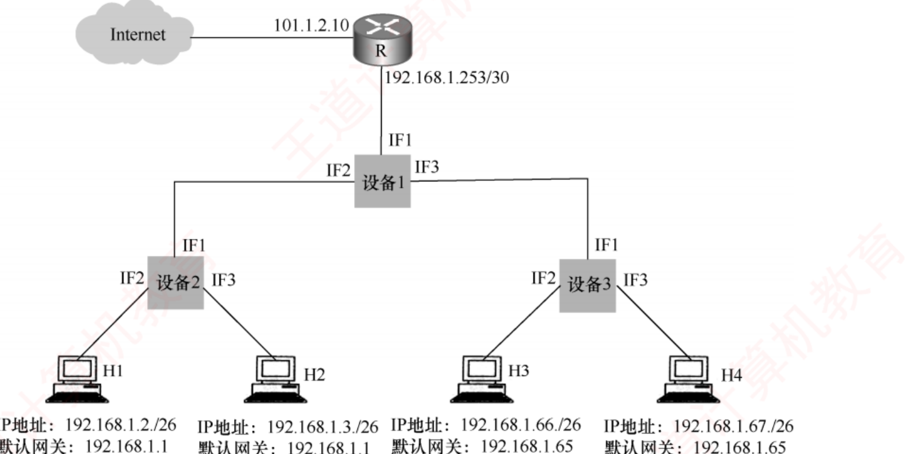

408
408先答旧题
片偏移的单位是？每片数据有什么要求？
10.1.77.200/22 的网络地址？
过路由器时，什么不变，什么变？
IP 本身只管尽力把分组送到。还有很多周边的活：找 MAC、拿地址、报错、地址不够用。这一话的协议都在帮 IP 干活，关键要记住每个协议封装在谁里面、干什么。
其之壹网络层到底干什么
异构网络互连：不同链路（以太网、Wi-Fi、PPP）帧格式、MTU 都不同，靠统一的 IP 分组和路由器连起来。
路由 vs 转发
路由：全局，算出路径，生成路由表（路由算法）。
转发：本地，查表把分组送到输出端口。
一个是后台算，一个是一直在做。
服务模型有两种：
| 维度 | 数据报 | 虚电路 |
|---|---|---|
| 连接 | 无连接 | 先建立虚电路 |
| 路径 | 每个分组独立选路 | 同一路径 |
| 顺序 | 可能乱序 | 按序 |
| 状态 | 路由器不记连接 | 路由器记虚电路 |
| 故障 | 影响小 | 所有该路径的虚电路断 |
Internet 的网络层是无连接、不可靠的数据报服务。虚电路也不等于可靠，它只保证按序走同一条路。
拥塞控制 vs 流量控制：拥塞是全局的，网络里分组太多，路由器队列爆满而丢包。流量控制是端到端的，接收方跟不上。
SDN（软件定义网络）
控制平面和数据平面分离：控制器集中算路由，通过南向接口下发流表，交换机只转发。北向接口向应用开放。
其之貳ARP
IP 分组要封装进帧，帧要目的 MAC，可我只知道 IP。
喊一嗓子
在局域网里喊一声（广播）：「谁是 x.x.x.x？」对方单独回（单播）。比方的局限：只能在同一个网段喊，跨不过路由器。
ARP
作用：同一网段内，IP → MAC。
请求广播，响应单播。结果放 ARP 缓存，定时过期。
跨网段时：解析的是默认网关的 MAC。
完整看一次跨网段发送：H1 发给别的网段的 H2。
- H1 用掩码判断不在同一网段，下一跳是网关。
- H1 广播 ARP 查网关的 MAC。
- 帧的目的 MAC = 网关，IP 目的 = H2。
- 网关转发，下一段再 ARP 查 H2 或下一跳的 MAC。
其之參DHCP
刚连上网的主机什么都没有，怎么拿到 IP？
DHCP 四步（应用层，基于 UDP）
① Discover（广播，源 0.0.0.0）
② Offer（服务器提供）
③ Request（广播，告诉所有服务器我选谁）
④ ACK
给 IP、掩码、网关、DNS。地址是租用的，有期限。
为什么 Request 还要广播？可能有好几个服务器都提供了，要让其他服务器知道可以收回。
其之肆ICMP
IP 不可靠，出了错总得告诉一下。ICMP 封装在 IP 中，分两类：
- 差错报告：目的不可达、时间超过、参数问题、改变路由（重定向）、源点抑制（要求降低发送速率，后来已很少用）。
- 询问：回送（ping）、时间戳。
不发差错报告的情况：对 ICMP 差错报文、非第一片的分片、组播分组、特殊地址，以免产生更多包。
两个应用
ping：回送请求和回答。
traceroute：依次发 TTL=1,2,… 的分组，收「时间超过」确定路径。
其之伍NAT
IPv4 不够用，内网用私有地址，出口路由器把它换成公网地址。
| 方向 | 内网 → 外网 | 外网 → 内网 |
|---|---|---|
| 源 | 私有 IP:端口 改成 公网 IP:新端口 | — |
| 目的 | — | 公网 IP:端口 查表改回 私有 IP:端口 |
走一遍：内网 192.168.0.8:3000 访问 Web 服务器。NAT 记录 (192.168.0.8:3000 ↔ 202.1.1.1:5000)，发出去时源变成 202.1.1.1:5000。响应回来目的是 202.1.1.1:5000，查表改回内网地址。
NAT 要点
既看 IP 也看端口，所以路由器工作到了传输层。外部不能主动访问内网（除非配置端口映射）。
其之陸IPv6
根本解决地址问题。
IPv6 主要特点
128 位地址。首部固定 40 B（+扩展首部）。去掉首部校验和；路由器不分片（只有源主机分，路由器发 ICMP「分组太大」）。
地址表示：8 组 16 位十六进制，连续 0 可用 ::（一次）。
单播、组播、任播（没有广播）。
过渡：双栈、隧道。
压缩的例子：2001:0DB8:0000:0000:0000:0000:0000:0001 可写成 2001:DB8::1。每组前导 0 可省，一串全 0 组可用一个 ::，因为只用一次才能还原。
其之柒IP 组播
一份数据发给一组主机，不用发多份。
组播
D 类地址：224.0.0.0 ~ 239.255.255.255，只能做目的。
IP→MAC：低 23 位映射到 01-00-5E-...（所以 32 个 IP 对一个 MAC）。
IGMP：主机和本地路由器之间，只在本地。
组播路由：建树。
其之捌移动 IP
手机换了网络，IP 变了，正在进行的连接怎么不断？
三个实体
移动节点、归属代理、外部代理（外地代理）。
永久地址（归属地址）+ 转交地址。
过程：节点向归属代理注册转交地址 → 通信方发到永久地址 → 归属代理截获并隧道转发 → 外部代理解封 → 给移动节点。回程可以直接发。
其之玖路由器
路由器结构
路由选择部分：运行路由协议。分组转发部分：输入端口、交换结构、输出端口。
输入和输出端口都可能排队，输出排队严重时丢弃（拥塞）。
实现到第 3 层。交换结构有内存、总线、交叉开关三种（交叉开关可以并行）。
路由器隔离广播域，交换机和集线器不隔离。所以能抑制广播风暴的只有路由器。
合上页面说一遍：说出 ARP、DHCP、ICMP、NAT 各自做什么、封装在哪。
ARP：IP→MAC，直接在帧里，同网段。DHCP：分配地址，UDP。ICMP：报错和询问，封装在 IP。NAT：私有地址和端口换公网，路由器做。
领域展开
ARP：IP→MAC，请求广播响应单播。
DHCP：发现、提供、请求、确认，UDP。
ICMP：IP 承载；ping 与 traceroute。
IPv6：128 位，40 B，路由器不分片。
移动 IP：隧道。
其之拾实战
再深一层
| 功能 | 协议 | 层次 | 状态 |
|---|---|---|---|
| IP ⟹ MAC ✔ | ARP | 网络层 | 常用 |
| MAC ⟹ IP | RARP | 网络层 | 已被 DHCP 取代 |
| 域名 ⟹ IP | DNS | 应用层（ch6） | 常用 |
| IP ⟹ 域名 | DNS 反向解析（PTR 记录） | 应用层 | 少用 |
📌 2012 年这一年在本章连考三题：本题（ARP 功能）· 「直接为 ICMP 提供服务的协议」· 「求子网广播地址」——三道全是基础概念/一步计算，是 4.2 节里性价比最高的一年。
再深一层
帧（PPP / 以太网）
└ IP 数据报
└ ICMP 报文 ← ICMP 被 IP 装着
⟹ IP 直接为它提供服务
PPP 服务的是 IP（下一层为上一层服务，隔了一层不算「直接」）
TCP/UDP 服务的是应用层，与 ICMP 完全无关⚠️ 「直接」两个字是本题的关键：PPP 确实在更底层，最终也承载了 ICMP，但它直接服务的对象是 IP——服务关系只在相邻两层之间成立，隔层不算。⭐ 把本章几个协议的「服务提供者」列全，这类题就通吃：
| 协议 | 直接为它提供服务的是 |
|---|---|
| ICMP | IP（封装在 IP 数据报中） |
| IGMP | IP（同样封装在 IP 数据报中） |
| OSPF | IP（协议号 89，直接封装进 IP） |
| ARP | 数据链路层（直接封装成帧，不经过 IP） |
| RIP | UDP（端口 520） |
| BGP | TCP（端口 179） |
| DHCP | UDP（端口 67/68） |
再深一层
| 题干若说 | 该发哪一类 |
|---|---|
| 因拥塞而丢弃 ✔ | 源点抑制 |
| TTL 减到 0 / 分片收不齐 | 时间超过（选项 D 的「超时」） |
| 找不到路由 / DF=1 装不下 / 端口无进程 | 终点不可达（选项 B） |
| 首部字段值不正确 | 参数问题 |
| 有更短的路可走 | 改变路由 / 重定向（选项 A） |
⚠️ 王道特意标注「新标准已废弃」，但 408 按教材口径考——见到「因拥塞丢弃 ⟹ 发什么 ICMP」，答案就是源点抑制，不要因为「它过时了」而犹豫。
📌 2010 年在 4.2 节考了两道：本题 + 定长子网划分（32，6）——一道纯记忆、一道纯计算，是这一节两种题型的典型代表。
再深一层
| 要提供什么能力 | 首部里必须有什么字段 | IP 首部有吗 |
|---|---|---|
| 面向连接 | 连接标识 / 建立连接用的字段 | 没有 |
| 可靠（不丢不重不乱） | 序号 + 确认号 + 数据检验和 | 没有序号；检验和只校验首部 |
| 流量控制 | 窗口字段 | 没有 |
| 差错报告 | — | 有（靠 ICMP，但只报告不纠正） |
⭐ 本题的完整因果链，一条串起全书：网络层选无连接不可靠（简单、路由器廉价、故障适应性强）⟹ 可靠性只能由端系统兜底 ⟹ 传输层必须有 TCP；而 UDP 之所以存在，是因为有些应用宁可不要这份兜底（ch5、ch6 会反复回到这里）。
Ⅰ. 运行路由协议，设置路由表
Ⅱ. 监测到拥塞时，合理丢弃 IP 分组
Ⅲ. 对收到的 IP 分组头进行差错检验，确保传输的 IP 分组不丢失
Ⅳ. 根据收到的 IP 分组的目的 IP 地址，将其转发到合适的输出线路上
再深一层
| 说法 | 对不对 | 要害 |
|---|---|---|
| Ⅰ 运行路由协议、设置路由表 | ✔ | 控制平面的本职工作 |
| Ⅱ 拥塞时合理丢弃 | ✔ | 丢弃 + 发 ICMP 源点抑制（2010 真题考过） |
| Ⅲ 首部检验，确保不丢失 | ✘ | 前半句对（确实检验首部），后半句错——首部检验和只能保证「留下来的分组首部没错」，不能保证「分组不丢」 |
| Ⅳ 按目的 IP 转发 | ✔ | 数据平面的本职工作 |
📌 「尽最大努力交付」的五条含义，正是 Ⅲ 的反面（4.8 疑难点 1）：① 不保证无差错到达 · ② 不保证在规定时间内交付 · ③ 不保证按序交付 · ④ 不保证不重复交付 · ⑤ 不主动丢弃，只在两种情况下丢：首部检验和出错 或 缓存满无法处理。
⚠️ 由 ⑤ 可以反推出 Ⅱ 为什么对：「缓存满而丢弃」正是拥塞时的合理丢弃——路由器不是随意丢，而是被迫丢。
Ⅰ. 中继器 Ⅱ. 集线器 Ⅲ. 网桥 Ⅳ. 路由器
再深一层
网桥/交换机确实能分割冲突域（每端口一个） 但它遇到两类帧时必须从所有端口发出去： ① 广播帧（目的 MAC = FF-FF-FF-FF-FF-FF）⟹ 本来就要泛洪 ② 未知单播帧（交换表里查不到目的 MAC）⟹ 为保证能送到，只能泛洪 ⟹ 广播照样传遍全网 ⟹ 广播域仍然是 1 ⟹ 抑制不了广播风暴⭐ 「冲突域个数 = 端口数、广播域 = 1」是交换机的固定结论，与「路由器：冲突域 = 端口数、广播域 = 端口数」并排记。
📌 解析末尾那句话可以当成一条秒杀规则：「其他设备能隔离的，路由器一定能隔离」——所以凡问「哪些设备能做某种隔离」，路由器必然入选；剩下的只需判断低层设备够不够格。
⚠️ 本题问的是「抑制广播风暴」而不是「分割冲突域」：若改问后者，答案就变成 Ⅲ 和 Ⅳ（网桥 + 路由器）——一字之差，答案就换。
1）设备 1、设备 2 和设备 3 分别应选择什么类型的网络设备？
2）设备 1、设备 2 和设备 3 中，哪几个设备的接口需要配置 IP 地址？为对应的接口配置正确的 IP 地址。
3）为确保主机 H1 ~ H4 能够访问 Internet，R 需要提供什么服务？
4）若主机 H3 发送一个目的地址为 192.168.1.127 的 IP 数据报，网络中哪几个主机会接收该数据报？

2）设备 1 为路由器，其接口应配置 IP 地址。IF1 接口与路由器 R 相连，R 侧接口的 IP 为 192.168.1.253/30，253 = 1111 1101，因此 IF1 的网络前缀也应为 192.168.1.252/30；已分配 192.168.1.253，去除全 0 和全 1，IF1 接口的 IP 地址应为 192.168.1.254。LAN1 的默认网关为 192.168.1.1，LAN2 的默认网关为 192.168.1.65；网关地址就是路由器 LAN 端口的地址，因此设备 1 的 IF2、IF3 接口的 IP 分别设置为 192.168.1.1 和 192.168.1.65。
3）私有地址段 192.168.0.0 ~ 192.168.255.255，即 H1 ~ H4 均为私有 IP 地址，若要能够访问 Internet，R 需要提供 NAT 服务（网络地址转换服务）。
4）目的地址 192.168.1.127 的主机号全为 1，是 LAN2 所在网络 192.168.1.64/26 的广播地址；因为路由器可以隔离广播域，所以只有主机 H4 会接收到该数据报。
再深一层
本题是「设备选型 + /30 对端 + NAT + 广播地址」四合一，逐问拆：
| 问 | 判据 | 答 |
|---|---|---|
| 1）选型 | H1/H2 在 192.168.1.0/26，H3/H4 在 192.168.1.64/26 ⟹ 两个不同的网络⟹ 中间必须有能隔离广播域的设备 | 设备 1 = 路由器 设备 2、3 = 交换机 |
| 2）配 IP | 只有路由器的接口需要 IP；交换机（无 VLAN）工作在二层，不需要 | IF1 = .254、IF2 = .1、IF3 = .65 |
| 3）NAT | H1~H4 全是 192.168/16 私有地址，公网路由器一律不转发 | R 必须提供 NAT |
| 4）广播 | .127 是 192.168.1.64/26 的广播地址；路由器隔离广播域 | 只有 H4 收到（H3 是发送方） |
⚠️ 第 4 问最容易多答一个 H3：H3 是发送方，题目问的是「哪几个主机会接收该数据报」——同一广播域内除发送方外的主机才算，所以只有 H4。H1、H2 属于另一个广播域（192.168.1.0/26），被设备 1（路由器）挡住了。
📌 本题与 2022（设备选型 + 最短帧长）、2020（双 NAT 三段地址）构成一组「配置分析题」：三题的共同解法是先用掩码把主机分组，再逐台核网关，最后按域判断可达性。
做完再翻：这些题到底在问什么
概念题基本都在问层次和封装：ICMP 由 IP 承载、DHCP 走 UDP、路由器工作到第 3 层。 DHCP 地址题：Discover 的源 0.0.0.0、目的 255.255.255.255。 设备判断：能隔离广播的只有路由器；看大题拓扑时先判断两端是不是同一子网，才知道中间是路由器还是交换机。